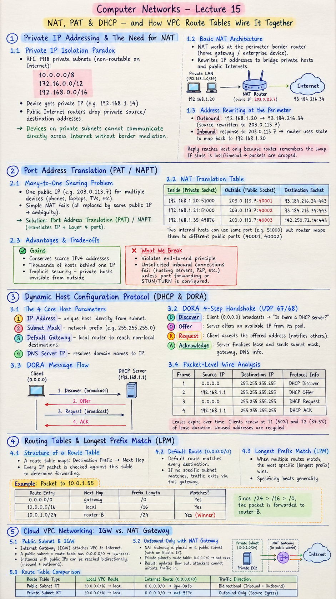

Short Notes & Visual Summary
Handwritten / quick summary notes for Lecture 15:

Click image to open high-resolution version in new tab
Private IP Addressing & The Need for NAT
1.1 Private IP Isolation Paradox
Subnets defined by RFC 1918 (10.0.0.0/8, 172.16.0.0/12, 192.168.0.0/16) are non-routable over the public Internet. When a device such as your phone connects to home Wi-Fi, it receives a private address like 192.168.0.14. Because public Internet routers drop private source and destination addresses, devices on private subnets cannot communicate directly across public networks without border mediation.
1.2 Basic NAT Architecture
Network Address Translation (NAT) operates directly at the perimeter border router (such as a home gateway or enterprise perimeter device). NAT bridges private local hosts and public internet endpoints by rewriting IP addresses in transit.
- Outbound Transit (Host → Internet): Router intercepts packet leaving host (Source:
192.168.1.20, Dest:93.184.216.34) and replaces the private source IP with its own single public WAN IP (e.g.,203.0.113.7). - Inbound Transit (Internet → Host): Router receives server response (Source:
93.184.216.34, Dest:203.0.113.7), consults its state memory, and replaces the public destination with192.168.1.20before passing it inward.
1.3 Border Address Rewriting Mechanics
The core invariant of NAT is state tracking: The reply only finds its way home because the router remembers the swap. If state tracking is corrupted, incomplete, or dropped due to idle timeout, returned packets cannot be forwarded and are discarded.
Port Address Translation (PAT / NAPT)
2.1 The Many-to-One Sharing Problem
If an ISP assigns only one public IP (e.g., 203.0.113.7) to a household with 10+ devices (phones, laptops, consoles, smart TVs) streaming and gaming concurrently, simple IP-level NAT fails because replacing all private IPs with the same public IP creates ambiguity when packets return. The solution is Port Address Translation (PAT), also called Network Address Port Translation (NAPT).
2.2 NAT Translation Table Architecture
PAT translates both the IP address and the Layer 4 Port number. The router translates each outbound connection into a unique external port on its single public IP.
| Inside (Private Socket) | Outside (Public Socket) | Destination Socket |
|---|---|---|
192.168.1.20:51000 |
203.0.113.7:40001 |
93.184.216.34:443 |
192.168.1.21:51000 |
203.0.113.7:40002 |
93.184.216.34:443 |
192.168.1.35:49876 |
203.0.113.7:40003 |
142.250.72.14:443 |
Even when two separate internal hosts pick the identical ephemeral port (e.g. 51000), the router maps them to distinct public ports (40001 vs 40002). When return packets arrive at port 40002, the router unambiguously delivers them to 192.168.1.21:51000.
2.3 Advantages & Architectural Trade-offs
- What We Gain: Extreme conservation of scarce IPv4 addresses (thousands of hosts behind one IP); implicit security side-effect because private hosts are invisible and unaddressable from outside.
- What We Break: Destroys the end-to-end principle of the original Internet architecture. Unsolicited inbound connections (e.g., hosting a peer-to-peer node or public web server) fail unless explicit port forwarding or STUN/TURN traversal is configured.
Dynamic Host Configuration Protocol (DHCP & DORA)
3.1 The 4 Core Host Parameters
When a new device associates with a LAN, it cannot communicate without four basic Layer 3 parameters delivered automatically by a DHCP lease:
- IP Address: Unique host identity carved from the local subnet.
- Subnet Mask: Delineates network prefix from host bits (e.g.,
255.255.255.0). - Default Gateway: The local router interface IP to reach all non-local destinations.
- DNS Server IP: Resolves human-readable domain names into IP addresses.
3.2 The DORA 4-Step Handshake
- [D] Discover: Client has no IP yet ($0.0.0.0$). Broadcasts to $255.255.255.255$ asking: "Is there a DHCP server available?"
- [O] Offer: DHCP server reserves an unassigned address from its pool and broadcasts or unicasts a proposed lease.
- [R] Request: Client broadcasts accepting the offered address (confirming selection and notifying other possible servers).
- [A] Acknowledge (ACK): Server finalizes the lease duration, confirms allocation, and sends network mask, gateway, and DNS info.
3.3 Packet-Level Wire Analysis
| Frame | Source IP | Destination IP | Protocol Info |
|---|---|---|---|
| 1 | 0.0.0.0 |
255.255.255.255 |
DHCP Discover |
| 2 | 192.168.1.1 |
255.255.255.255 |
DHCP Offer |
| 3 | 0.0.0.0 |
255.255.255.255 |
DHCP Request |
| 4 | 192.168.1.1 |
255.255.255.255 |
DHCP ACK |
Addresses expire over time; clients automatically initiate renewal handshakes at half the lease time ($T_1$) and $87.5\%$ ($T_2$), recycling unused addresses when devices disconnect.
Routing Tables & Longest Prefix Match (LPM)
4.1 Structure of a Route Table
A route table is essentially a deterministic lookup table: Destination Prefix → Next Hop. Every single IP packet evaluated by a router is checked against this table to determine which interface or neighbor to forward to.
4.2 Default Route (0.0.0.0/0) & Specificity
0.0.0.0/0 is the default route (the catch-all route). With a mask length of 0 bits, it matches every destination IP on the planet. If no specialized subnet matches, traffic exits via this gateway.
4.3 Resolving Overlapping Route Prefixes
When multiple route entries match a destination address, Longest Prefix Match (LPM) determines the winner: Specificity beats generality.
- Candidate 1:
0.0.0.0/0 → gateway(Prefix length: $/0$ bits — too broad) - Candidate 2:
10.0.0.0/16 → local(Prefix length: $/16$ bits — matches) - Candidate 3:
10.0.1.0/24 → router-B(Prefix length: $/24$ bits — Winner)
Because $/24 > /16 > /0$, the router forwards the packet to router-B.
Cloud VPC Networking: IGW vs. NAT Gateway
5.1 Public Subnet Architecture & IGW
In Amazon Web Services (AWS) Virtual Private Cloud (VPC), subnets are not physically partitioned; their accessibility is controlled by route table associations. An Internet Gateway (IGW) attaches the VPC directly to the Internet. By definition:
"Public subnet" simply means: the associated route table contains a route 0.0.0.0/0 → igw-xxxx. Instances with public IPs in this subnet can be reached bidirectionally (inbound and outbound).
5.2 Outbound-Only Isolation with NAT Gateway
Backend database servers and application workers must download software patches from the Internet but must never accept unsolicited inbound connections from potential attackers. A NAT Gateway solves this:
- The AWS NAT Gateway is provisioned inside a Public Subnet (with an Elastic IP).
- The private subnet's route table points its default route to that NAT Gateway:
0.0.0.0/0 → nat-xxxx. - Result: Updates flow out; attackers cannot initiate traffic in.
5.3 Route Table Comparison: Public vs Private
| Route Table Type | Local VPC Route | Internet Route (0.0.0.0/0) | Traffic Direction |
|---|---|---|---|
| Public Subnet RT | 10.0.0.0/16 → local |
0.0.0.0/0 → igw-0a1b |
Bidirectional (Inbound + Outbound) |
| Private Subnet RT | 10.0.0.0/16 → local |
0.0.0.0/0 → nat-9f7c |
Outbound-Only (Secure Egress) |
Original PDF Notes
Below is the original PDF document for reference: